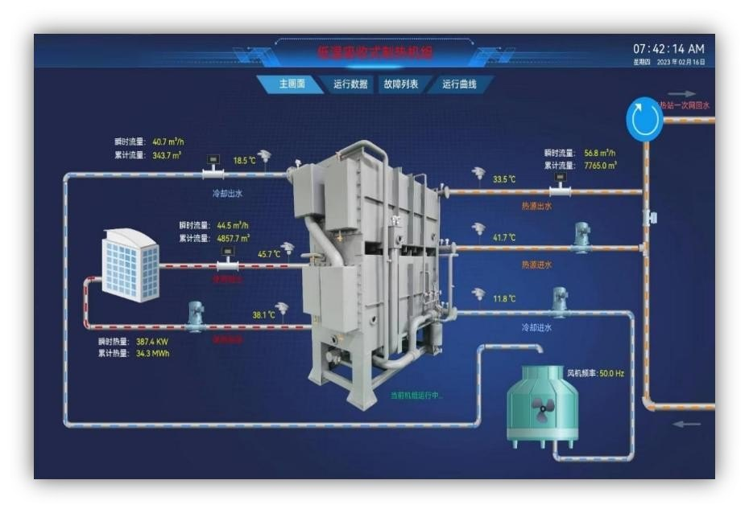
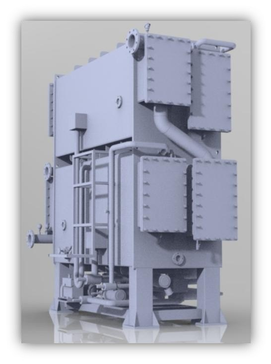

低温废热为什么容易被浪费
化工、焦化与制造生产过程中，大量余热以低温热水、烟气或浆液形式存在。由于温度偏低，直接换热往往难以满足工艺要求，过去多通过冷却塔排走，既浪费能量，也带来热污染与视觉问题。
超低温吸收式热泵的价值，正在于把这类低品位热源转化为可用的冷量或热量。与传统压缩式制冷相比，它以热驱动为主，电力消耗显著较低。

技术特点与适用边界
资料显示，该类机组的驱动热源温度要求可下降20—60°C，可用35°C温水制热、60°C温水制冷；电能消耗约占输出功率的6‰，冷热转换效率提高25%以上。机组类型包括制冷机组、制热机组与双效机组，需按余热温度与用能需求选型。
需要强调的是，余热回收不是温度越高越好，也不是所有废热都值得回收。热源稳定性、输送距离、用冷用热匹配与设备投资，都会影响方案的可行性。
三类典型应用场景
其一，制造企业的空压机余热回收，用于制取工艺冷水或生活热水。其二，化工企业的工艺废热利用，将60—70°C的工艺余热转化为冷冻水。其三，焦化行业的脱硫浆液余热利用，用于供暖回水升温，并改善烟囱消白效果。

项目如何落地
流程从热源与用能需求调研开始，经温度与流量测试、方案设计、施工实施、系统调试与效果核正完成。能源管理系统可对余热回收系统的运行数据做持续监测，便于核算节能量与减排效果。
更多技术细节可查看吸收式热泵与业务领域；如需评估余热条件，可提供服务电话0769-22996692或通过微信扫码交流。